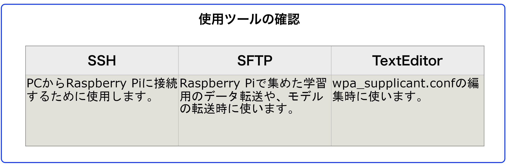
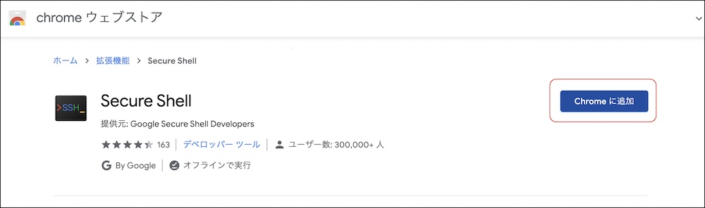
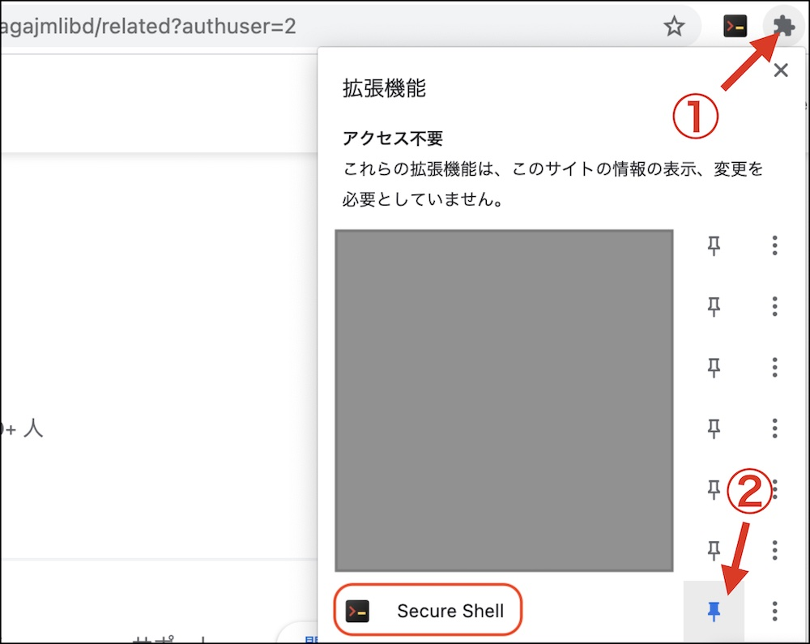

接続ツール

接続ツール
| 作業デバイス |
|---|
| 機能 | アプリ | プラットフォーム | 用途 |
|---|---|---|---|
| SSH | Secure Shell | Chrome拡張 | Raspberry Pi3に接続し、DonkeyCarでコマンドを実装するために使用します。SSH通信が可能なツールならどれでも使用可能です。 |
| SFTP | Secure Shell | Chrome拡張 | データ・セット(data.zip)をRaspberry Pi3からPCに転送する用途で使います。また、学習済みモデル(mypilot)をPCからRaspberry Pi3に転送するために使います。 |
| Text Editor | 任意のTextエディタ | 任意のアプリ | wpa_supplicant.confを編集するために使用 |
接続ツール
SSH, SFTP, TextEditorの代わりに、普段使われているツールを使うこともできます。
Chromeアプリのインストール
| 作業デバイス |
|---|
Secure Shell をクリックし、Chrome Storeからインストールします。


Secure Shellのアイコンが常に表示されるように、PINで固定します。
